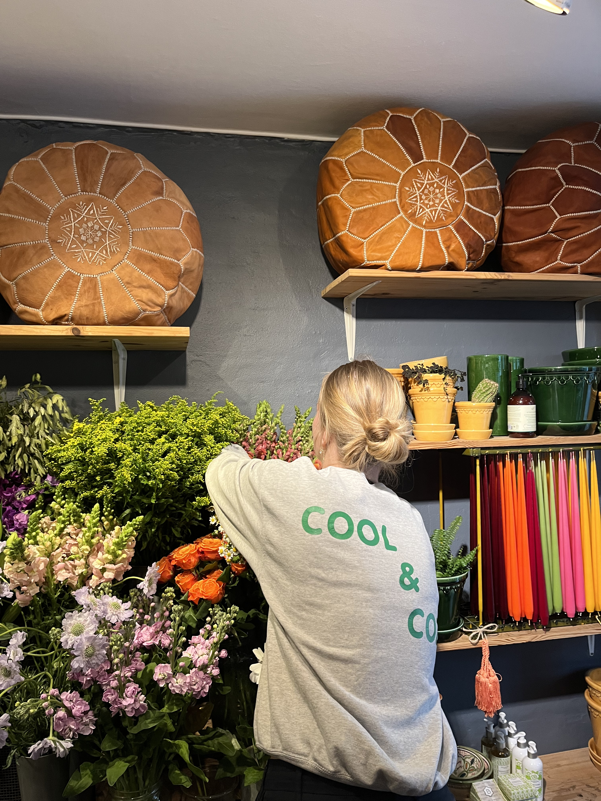

Vores historie
Cool & Cozy er skabt ud fra mødet mellem marokkansk varme og dansk hygge. Inspireret af de lokale markeder og små forretninger i Marokko — hvor mennesker mødes og deler historier — ønskede vi at skabe den samme stemning midt på Vesterbro. Bag butikken står Trille og Hicham. Det, der begyndte som et møde mellem to kulturer, blev til forelskelse og et fælles univers bygget på kreativitet og kærlighed.